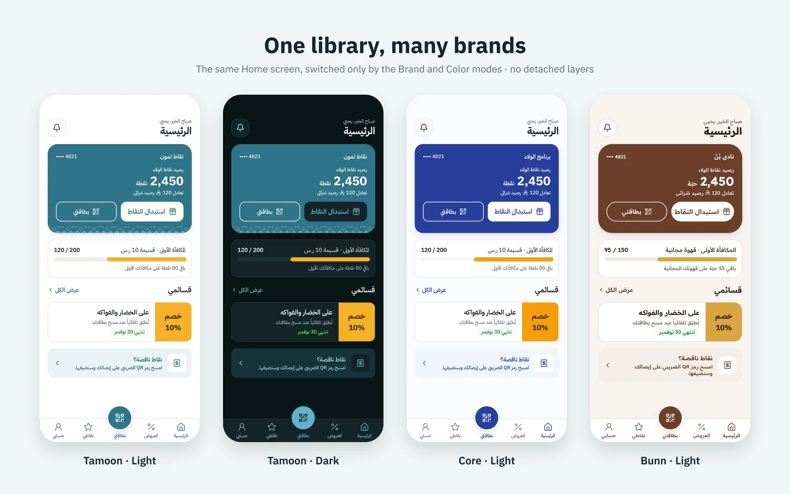
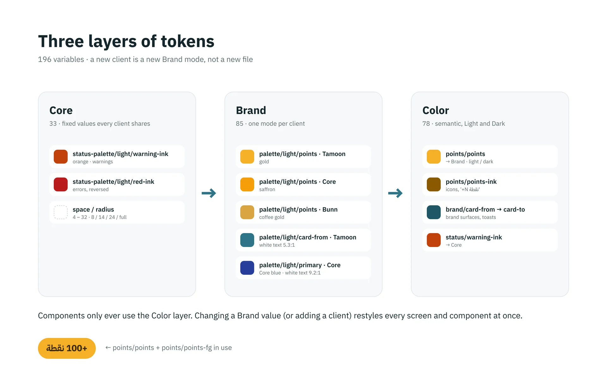
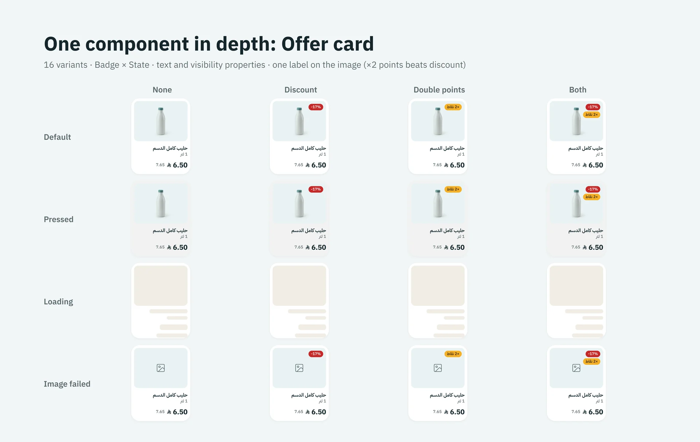
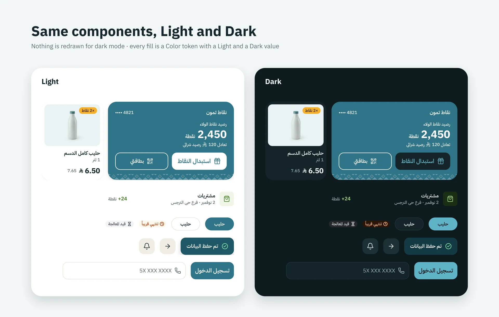
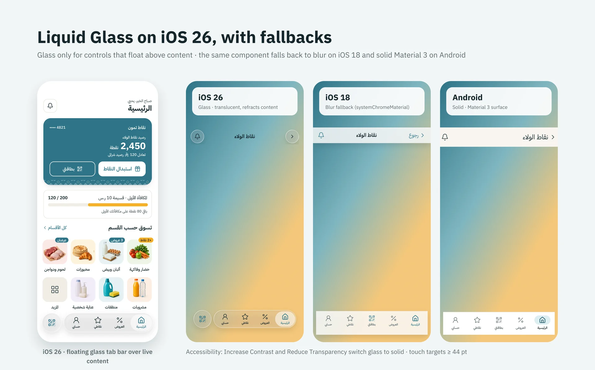
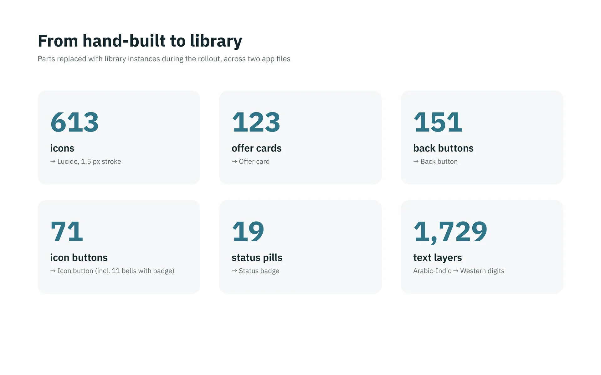
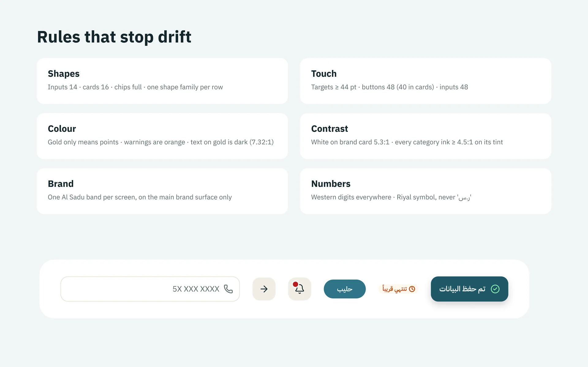

Tamoon design system: one library, many brands
A white-label Figma library where a new retailer is a new set of values, not a new file. Design system for an Arabic-first grocery loyalty app, iOS and Android, pre-launch, 2026. It's the library behind the Tamoon app case study.
The short version
The client wanted to sell the same loyalty app to other retailers. If every brand needed its own Figma file, every fix would have to be made three times and the files would drift apart within weeks.
I built one library with 196 variables in three layers, about 40 components with their states, and 194 Lucide icons. A client is a Brand mode. Switching the mode restyles every screen without touching a layer. Then I rolled it into the app files, replacing hand-built parts with library instances.
In three layers: Core, Brand, Color.
With the states a real screen needs.
Lucide, at a 1.5 px stroke.
One library, every client







Three brands, one app
Tamoon, plus two sample clients (Core and Bunn) to prove the idea, each in Light and Dark.
Every component is built RTL first; English is the adaptation.
The first app file had icons, cards and badges drawn by hand, each slightly different.
Core → Brand → Color
Values every client shares: status palette (warning orange, error red), spacing, radius
One mode per client (Tamoon, Core, Bunn): the brand teal, card gradient, points colour, category tints
Semantic names components use: points/points, brand/card-from, status/warning-ink, surface/muted
The rule: components only ever use the Color layer. Changing a Brand value, or adding a client, restyles every component and screen at once.
Small calls, made once
3A · Gold means pointsGold means points, and nothing else
Points have their own four tokens (solid, text on solid, soft, ink). Warnings moved from amber to orange so an expiry notice never reads as a reward. Text on gold is dark (7.32:1), never white (1.89:1).
3B · Contrast at the tokenContrast fixed at the token, not the screen
White text on the brand card was 4.17:1. Darkening one Brand value (#388699 → #2E7487) brought every brand card to 5.3:1.
Try it: the same card with the Brand value before and after.
brand/card-fromWhite text 4.17:1brand/card-fromWhite text 5.3:1One Brand value changed. Every brand card in every file follows it.
One radius for every button, one shape family per row
- One radius for every button. Back and icon buttons take their corners from one
radius/buttontoken, so one value restyles them all. - One shape family per row. Inputs 14 pt, cards 16 pt, chips fully rounded. Buttons next to an input take its corners.
Western digits, and the Al Sadu band used sparingly
- Western digits everywhere, with the Riyal symbol as its own component, never "ر.س".
- Heritage used sparingly. The Al Sadu band appears once per screen, on the main brand surface only.
About 40 components, each with its states
About 40 components across Buttons, Inputs, Chips and controls, Navigation, Loyalty, Commerce, Patterns and Liquid Glass (iOS 26). Each one has the states a real screen needs, not just the default.
Example · Offer card16 variants, one job
16 variants (Badge: none, discount, double points, both × State: default, pressed, loading, image failed), with text and visibility properties. One label on the image, and ×2 points wins over a discount. No save heart and no points line, so the card does one job: showing the price.
Other components with states built in
- Icon button: seven styles, including On dark and On media for the card and scanner screens, and a badge option for unread notifications.
- Status badge: only for exceptions (pending, reversed, expiring soon), with fixed wording so it reads the same everywhere.
- Toast: success, info and error, in the deep brand teal so it follows each client's brand.
- Category tile, Member card, Points progress, Voucher, Activity row, Input, Back button, Filter chip, Flyer hero and more.
Same components, Light and Dark
Nothing is redrawn for dark mode. Every fill is a Color token with a Light and a Dark value.
Liquid Glass on iOS 26, with fallbacks
Glass only for controls that float above content. The same component falls back to blur on iOS 18 and to a solid Material 3 surface on Android. Increase Contrast and Reduce Transparency switch glass to solid, and touch targets stay ≥ 44 pt.
A library only counts when the app files use it
| Replaced with library instances | Count | |
|---|---|---|
| Icons | Lucide, 1.5 px stroke | 613 |
| Offer cards | 123 | |
| Back buttons | 151 | |
| Icon buttons | Including 11 notification bells with badge | 71 |
| Status pills | Now the Status badge | 19 |
| Text layers | Converted to Western digits | 1,729 |
A "Changelog & usage" page in the library records each release and the do's and don'ts, so the app files can be updated with confidence.
Written down, next to live components
- Touch targets ≥ 44 pt · buttons 48 pt (40 inside cards) · inputs 48 pt
- Inputs 14 · cards 16 · chips fully rounded · one shape family per row
- Gold only for points · warnings orange · text on gold dark
- White on brand card ≥ 5.3:1 · every category ink ≥ 4.5:1 on its tint
- One Al Sadu band per screen · Western digits · Riyal symbol
Claude did the bulk work, the decisions were mine
Claude did the bulk Figma work: swapping hundreds of icons and cards to instances, binding hard-coded colours to tokens, converting digits. Every token decision, every rule and every trade-off was mine, and several AI suggestions were turned down (a rounded search bar just for the map, a heart and points line on every offer card, the Al Sadu trim on every card).
Finish the rollout, then a second brand
- Finish the rollout. 115 back buttons in the main app file are linked to the radius token but still need swapping to the component; 20 deprecated icons can then be deleted.
- Code Connect to map components to the React Native code.
- Ship a second brand to test the system for real, and test dark mode on real screens.
Client name and details shared with permission.